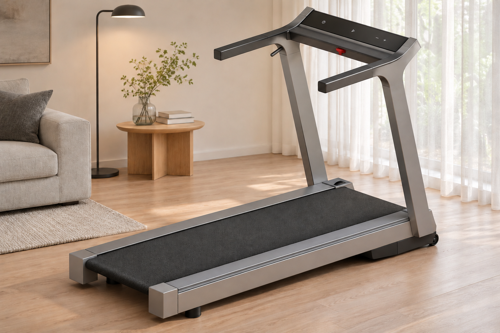
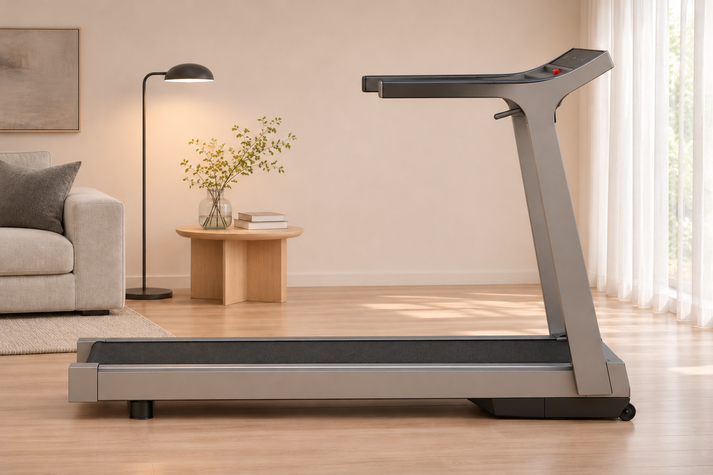
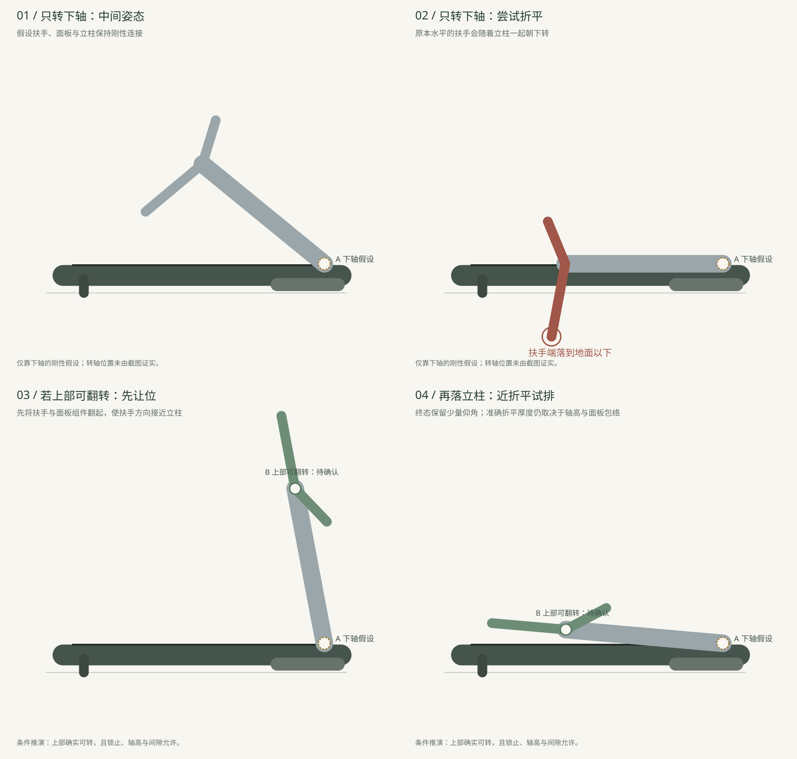

2026-11-09 尾端修正。用户确认此处为跑带内部转轴，两张室内图已改为跑带包覆的尾端。
01 / IN THE HOME暖白、浅木与灰色织物。
以克制的居家材质衬托这版平直、宽扁的结构。室内布置、粉末涂层、握持表面与LED界面为本次视觉提议，未改变全域跑台方向。


先确认转轴，再决定怎样折。
原图能看见什么
扶手与宽扁立柱在外形上连续；上部有小拨杆及局部黑色圆形特征。截图没有清楚交代这些零件是否构成翻转与锁止机构。
仅转下轴的疑点
若上部与立柱刚性相连，立柱向跑台收下时，原本水平的扶手会朝下扫。按图示比例和假设下轴试排，压平终态的扶手端低于地面。
值得核对的路径
若上部可解锁翻转，先把扶手／面板组件翻起，再让立柱绕根部转轴收下。若现有结构没有这处自由度，就需要相应修改，不能凭渲染假定已经具备。

目前能提出收折顺序，尚不能认定这套模型已经能完全折平。下一处需要核对的是：上部拨杆控制哪一处锁止、真实上下轴心在哪里，以及面板和扶手收合后是否避开跑带与地面。
下轴位置、杆长比例和终态仰角来自截图估读，不是CAD实测。示意未分析横向间隙、走线、锁止和三维干涉。竖放还需另外核对脚座与重心；本轮不以“摆成竖直”代替支撑验证。
这次收到的三张原图。
原图独立保留。室内图以整机和侧面轮廓为主，机底图用于理解下置体量；上次v03的转轴假设不作为这版结构的既有事实。


11月9日补充的结构图。
倾斜立柱、上下圆形连接处与圆弧尾端提供了双转轴构型线索。与前三张的版本关系待确认。可研究上部框架回折到立柱旁，再将立柱向跑台收下；转动范围、锁止、联动和净距需按本图核对。